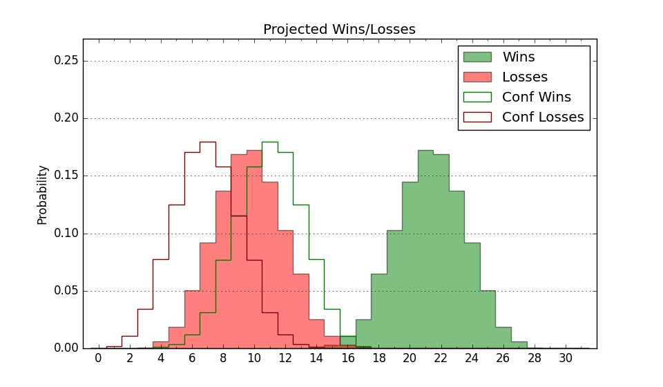

| Home | Game Probabilities | Conferences | Preseason Predictions | Odds Charts | NCAA Tournament |
| City: | Auburn, Alabama | |
| Conference: | SEC (1st)
| |
| Record: | 1-0 (Conf) 11-2 (Overall) | |
| Ratings: | Comp.: 18.9 (27th) Net: 18.3 (33rd) Off: 105.8 (95th) Def: 87.5 (18th) SoR: 80.3 (22nd) |
| Remaining | ||||||
|---|---|---|---|---|---|---|
| Date | Opponent | Win Prob | Pred. | |||
| 1/4 | @ Georgia (136) | 72.4% | W 69-62 | |||
| 1/7 | Arkansas (14) | 54.7% | W 70-68 | |||
| 1/10 | @ Mississippi (80) | 55.4% | W 66-65 | |||
| 1/14 | Mississippi St. (38) | 71.4% | W 63-57 | |||
| 1/18 | @ LSU (88) | 59.2% | W 68-65 | |||
| 1/21 | @ South Carolina (252) | 87.8% | W 70-57 | |||
| 1/25 | Texas A&M (85) | 82.4% | W 76-65 | |||
| 1/28 | @ West Virginia (17) | 30.6% | L 67-73 | |||
| 2/1 | Georgia (136) | 90.0% | W 73-58 | |||
| 2/4 | @ Tennessee (3) | 13.7% | L 55-68 | |||
| 2/7 | @ Texas A&M (85) | 58.0% | W 71-69 | |||
| 2/11 | Alabama (9) | 49.7% | L 74-75 | |||
| 2/14 | Missouri (49) | 73.1% | W 80-73 | |||
| 2/18 | @ Vanderbilt (97) | 61.6% | W 68-65 | |||
| 2/22 | Mississippi (80) | 80.9% | W 71-60 | |||
| 2/25 | @ Kentucky (25) | 33.7% | L 66-71 | |||
| 3/1 | @ Alabama (9) | 22.5% | L 70-79 | |||
| 3/4 | Tennessee (3) | 35.1% | L 60-64 | |||
| Previous | Game Score | |||||
| Date | Opponent | Win Prob | Result | Off | Def | Net |
| 11/7 | George Mason (93) | 83.8% | W 70-52 | -8.8 | 14.3 | 5.6 |
| 11/11 | South Florida (183) | 93.2% | W 67-59 | -16.3 | 2.0 | -14.4 |
| 11/15 | Winthrop (234) | 95.6% | W 89-65 | 17.1 | -9.8 | 7.3 |
| 11/18 | Texas Southern (226) | 95.1% | W 72-56 | -14.3 | 2.3 | -12.0 |
| 11/22 | (N) Bradley (74) | 67.5% | W 85-64 | 25.8 | -5.9 | 19.9 |
| 11/23 | (N) Northwestern (39) | 57.5% | W 43-42 | -23.7 | 21.3 | -2.4 |
| 11/27 | Saint Louis (98) | 84.5% | W 65-60 | -20.5 | 13.9 | -6.5 |
| 12/2 | Colgate (135) | 89.8% | W 93-66 | 15.8 | -1.7 | 14.2 |
| 12/10 | (N) Memphis (42) | 58.2% | L 73-82 | -4.4 | -11.3 | -15.7 |
| 12/14 | Georgia St. (260) | 96.3% | W 72-64 | 0.3 | -19.0 | -18.7 |
| 12/18 | @USC (63) | 48.7% | L 71-74 | 4.4 | -13.9 | -9.5 |
| 12/21 | @Washington (122) | 70.1% | W 84-61 | 18.4 | 8.7 | 27.1 |
| 12/28 | Florida (44) | 72.3% | W 61-58 | -5.8 | 5.7 | -0.1 |
| Stats & Trends | |||||
|---|---|---|---|---|---|
| Current | Day | Week | Month | Season | |
| Composite | 18.9 | +0.2 | -0.2 | +0.3 | -3.1 |
| Comp Rank | 27 | +4 | -2 | +3 | -12 |
| Net Efficiency | 18.3 | +0.2 | -0.2 | +2.1 | -- |
| Net Rank | 33 | +1 | +2 | +17 | -- |
| Off Efficiency | 105.8 | -0.1 | -0.4 | +9.1 | -- |
| Off Rank | 95 | -4 | -5 | +148 | -- |
| Def Efficiency | 87.5 | +0.3 | +0.2 | -7.0 | -- |
| Def Rank | 18 | +3 | -1 | -10 | -- |
| SoS Rank | 91 | +11 | +12 | +120 | -- |
| Exp. Wins | 21.3 | -0.0 | +0.2 | +0.2 | -0.2 |
| Exp. Conf Wins | 11.0 | -0.0 | +0.2 | +0.7 | -0.4 |
| Conf Champ Prob | 6.8 | +0.6 | +0.6 | -0.9 | -10.7 |

| Advanced Stats | ||
|---|---|---|
| Stat | Value | Rank |
| Off Eff FG % | 0.523 | 102 |
| Off Ast Ratio | 0.150 | 108 |
| Off ORB% | 0.370 | 8 |
| Off TO Rate | 0.165 | 206 |
| Off FT Ratio | 0.417 | 20 |
| Def Eff FG % | 0.420 | 9 |
| Def Ast Ratio | 0.104 | 13 |
| Def ORB% | 0.272 | 192 |
| Def TO Rate | 0.182 | 68 |
| Def FT Ratio | 0.327 | 223 |